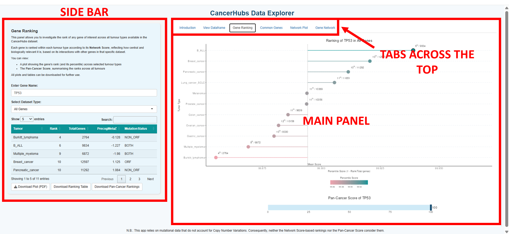
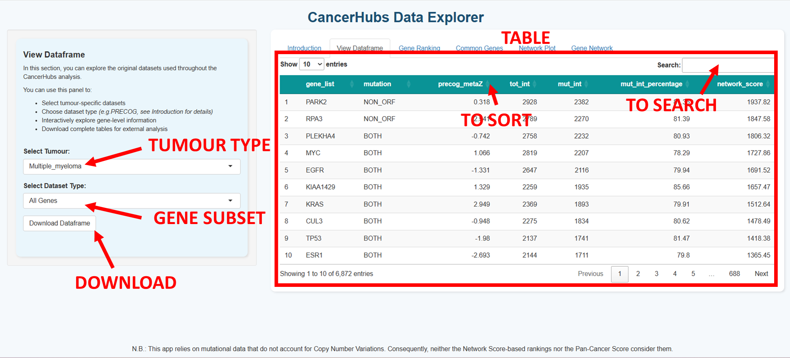
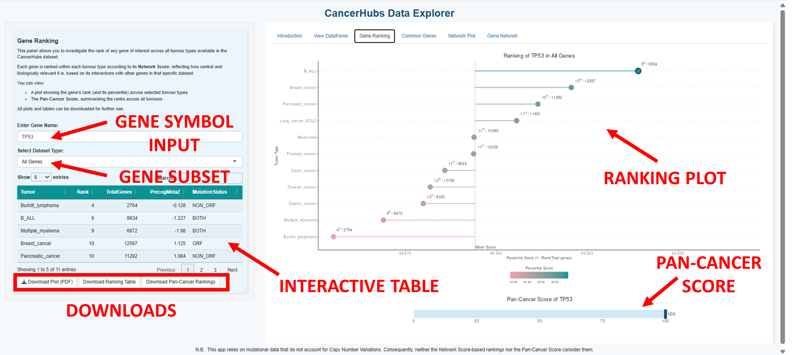
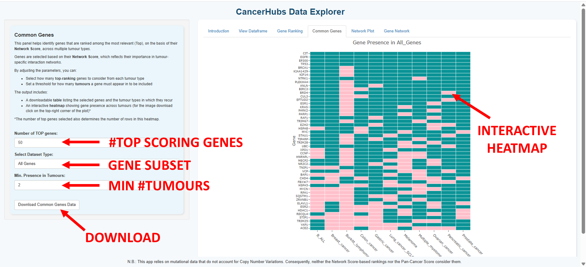
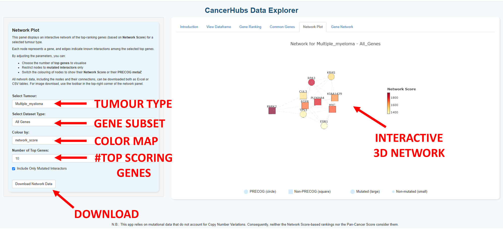
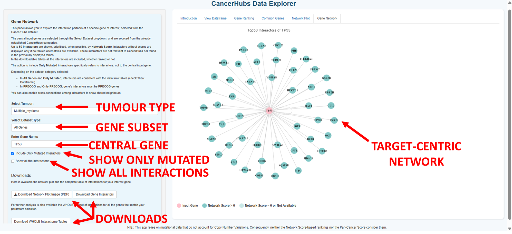

This guide provides a walkthrough for using the CancerHubs Data Explorer online. It explains how to navigate each tab of the web interface and retrieve data and images generated by the app.
The CancerHubs Data Explorer is an interactive web application for exploring pre-computed data from the CancerHubs project—a computational framework designed to predict proteins and pathways involved in cancer.
By integrating mutational, interactomic, and expression–prognosis correlation data, this method ranks genes based on a Network Score, which reflects the number of direct interactors mutated in each tumour type. This scoring defines hubs of mutated proteins with potential relevance for cancer research and therapy.
The CancerHubs Data Explorer is available online—no installation is necessary. Simply visit:
All necessary data and packages are loaded automatically upon opening the website.
The interface is divided into a sidebar (left) and a main panel (right).

Throughout the application, you can filter results based on predefined gene categories:
This panel allows you to explore the original datasets used throughout the CancerHubs analysis.

You can:
This panel allows you to investigate the rank of any gene of interest across all tumour types available in the CancerHubs dataset.

Each gene is ranked within each tumour type according to its Network Score, reflecting how central and biologically relevant it is, based on its interactions with other genes in that specific dataset.
You can:
This panel helps identify genes that are ranked among the most relevant (Top), based on their Network Score, across multiple tumour types.

You can:
This panel displays an interactive 3D network of the top-ranking genes (based on Network Score) for a selected tumour type.

You can:
This panel allows you to explore the interaction partners of a specific gene of interest, selected from the CancerHubs dataset.

Up to 50 interactors are shown, prioritised, when possible, by Network Score. Interactors without scores are displayed only if no ranked alternatives are available. These interactors are not ranked within CancerHubs and are not included in the tables displayed in other panels.
You can:
The app retrieves data directly from the main CancerHubs repository:
| Problem | Solution | |---|---| | No results found | Ensure the gene symbol is valid and present in the dataset. | | Slow network rendering | Reduce the number of genes or interactors displayed. | | Page not loading correctly | Check your internet connection and refresh your browser. |
If you use this application in your work, please cite:
Ivan Ferrari, Federica De Grossi, Giancarlo Lai, Stefania Oliveto, Giorgia Deroma, Stefano Biffo, Nicola Manfrini. CancerHubs: a systematic data mining and elaboration approach for identifying novel cancer-related protein interaction hubs. Briefings in Bioinformatics, 2025. https://doi.org/10.1093/bib/bbae635
For assistance, contact the maintainers listed in the README file. Contributions are welcome via GitHub pull requests.
Last updated: 27/06/2025